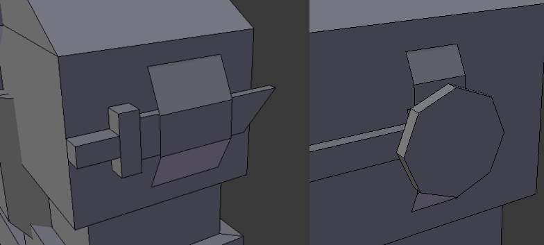

Bobat's Blg
The guy
Being one of the more iconic sets of armor in the mod, the trenchmaster set has a bit of history behind it. Unlike most other sets, this one is more or less an original creation, with bits and pieces being added and tested as we went along. The design process was a team effort, and was completed in about two hours.The general idea was a set of armor, only obtainable as dungeon loot, which belonged to a former war hero (mostly a propaganda figure, also a turbo-warcriminal). The general setting which hasn't really been figured out at the time was more WW1-like, a conflict between two nations, Taurun and Kolsecha. The name, originally "trench master" (note the space) was mostly a placeholder which got never replaced for lack of a better alternative. Design-wise, the armor resembles Tauru trench gear (with the trenchcoat and helmet based on British WW1 uniforms), with some low-tech upgrades and communications equipment. The trenchmaster was intended as highly mobile, doing backflips through trenches, with noticable heavier armor (including a cast steel chestpiece) without being outright power armor.
The helmet
Immediately I used the mining helmet as a base, it was an easy choice since it already resembled a WW1-era helmet (specifically, a British brodie helmet). The carbide lamp, which would break immediately when tilted, was replaced with a simple electric headlight. The helmet comes with a gas mask, one with a full hood, commpared to standard Tauru armor which uses a more traditional face mask. Another addition was the ear pieces and head-mounted antennas, which stick through the hood. In-dev screenshot of the helmet, note the absence of any details on the other bodyparts. The eyelet glasses were chosen to be hexagonal to give a more round appearance, like wide open eyes, instead of the more neutral look of a more traditional square shape.The chestplate
The base of the chest piece is a trenchcoat, based on British officer coats. From there on, I just started to staple things onto it, first a steel chest harness, then steel shoulder pads and greasy leather gloves (making the upper body part sealed, unlike standard Tauru armor). In-dev screenshot of the upper body section without any of the details. Shoulder fins were added for no particular reason (some other armor sets have them, mostly just because they look badass), a strap with a trench knife (on the left shoulder with the hilt sticking forward, so it can be grabbed with the right hand) and a mouthpiece for the communications equipment (right shoulder, so it can be used while the right hand is potentially still occupied handling a weapon).  Obviously no soldier is complete without his backpack, the base shape was just a box with the top being beveled, then pockets were added for trench equipment (shovel and pickaxe), a bed roll on top (he an eepy boi), a smaller cylinder on the bottom for a wire drum (for communications), a radio (the last two are absent on standard Tauru armor) and two grenades. Similar to the Trenchmaster's gun - the Hangman - being based on a gun from Foxhole, the grenades too are based on stick grenades featured in that game. And with that, the armor was almost done. Obligatory mention of the two largest inspirations for the trenchcoat - the general shape and the belt are based on actual British soldiers, the dark blue color and fancy buttons (obscured in the final model, but visible on the Tauru armor) are based on my boy Percy de Rolo, who you may remember from the pepperbox.Finishing touches
Of course, the armor needs proper legs and boots, the boot design being fairly standard when it comes to NTM armor, and the knees simply getting another light steel part to them. The final thing lacking was a bit of added personality. In reference to how US soldiers in Vietnam would often have playing cards on their helmets for identification, the Trenchmaster's helmet also got cards - an ace of spades and a queen of spades. A coat of paint later and voilà - that's our armor.{kind=link}
On Tauru armor
About one and a half years later in early 2025, I had the idea of adding undead soldiers that would continue the war the Trenchmaster fought in, as of writing I'm still mostly just dicking around with biome generation and the NPCs' AI but we'll get there eventually. Tauru armor was basically "reverse engineered" out of the Trenchmaster model, thankfully I had the foresight of both modeling and texturing the complete trenchcoat despite most of it not being visible. Th majority of changes needed were either part of the texture, or simply removing some of the steel parts to the armor. Only the arms needed a proper remodel, since the steel braces and the coat's sleeves were a joined mesh instead of simply being overlayed. All the "tech" was removed, the radio made way of a simple rations box, and instead of a full hood, the armor uses a more traditional face mask. Unlike the Trenchmaster set, the Tauru armor does not have a headlight, and the eyelet glasses do not glow in the dark.< i'm out